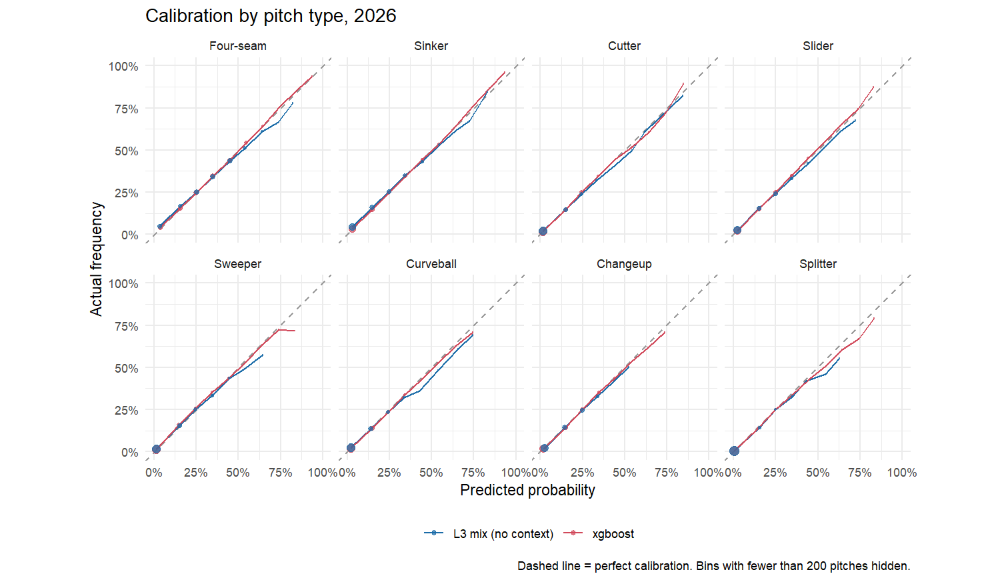

MLB / IN PROGRESS / UPDATED OCTOBER 2026
MLB Next-Pitch Model and Matchup Report
Predicting pitch type from game context, tested on 2026.

Overview
Using public Statcast data from 2023–2026, this project turns pitch-type predictions into a Shiny matchup app and an advance report. The cleaned dataset contains 2,854,374 regular-season pitches. Models were trained on 2023–24, tuned on 2025, refit on 2023–25, then scored once on 2026 under a written pre-registration. A known-when data dictionary supports leakage controls. Empirical-Bayes pitch-mix baselines are compared with ridge multinomial logistic regression and XGBoost; uncertainty uses 500 game-level bootstrap resamples. The model, app, report and write-up are built; scheduled refresh and retraining remain planned.
Findings
- 2026 held-out test, 711,703 pitches: XGBoost log loss 1.283 versus 1.580 for the shrunk prior-season mix and 1.390 for the current-form plus platoon mix. Difference versus prior-season mix: −0.297 (95% game-bootstrap interval −0.301 to −0.293).
- Exact-pitch accuracy: 44.7% for XGBoost, 37.2% for the prior-season mix and 40.1% for the current-form plus platoon mix. These are distinct benchmarks.
- Per-pitch-type expected calibration error was at most 0.4 percentage points. This is an average calibration measure, not a guarantee that every probability bin is within 0.4 points. Context improved log loss for 98% of 468 pitchers with at least 500 pitches.
Limitations and what’s left
- One held-out season; pitch type is predicted, not location.
- Pitch labels come from Savant’s classifier, with only partial relabel repair. Per-pitcher and per-count results have no confidence intervals.
- In-game adaptation results are post hoc; single-game postseason tests are not headline evidence.
- Scheduled acquisition, scoring and retraining are planned, not built.